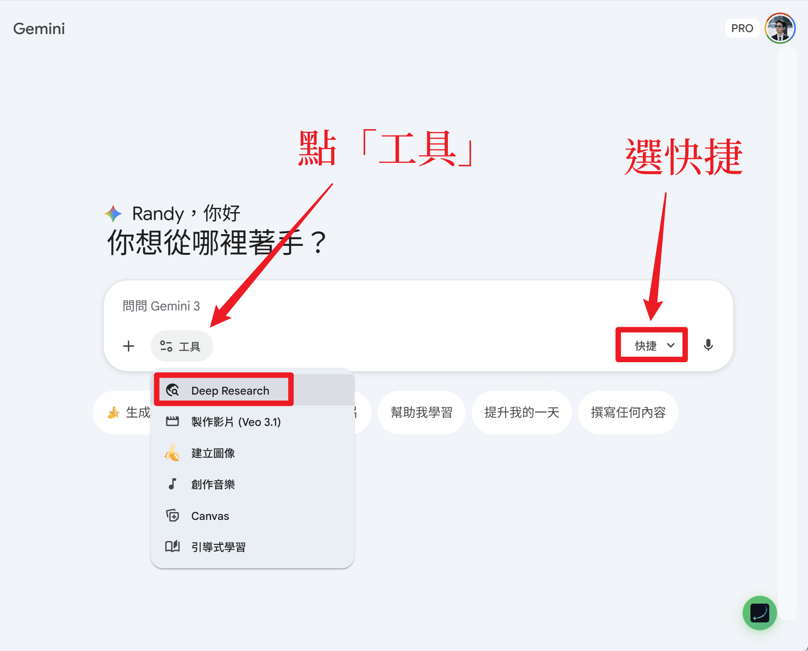
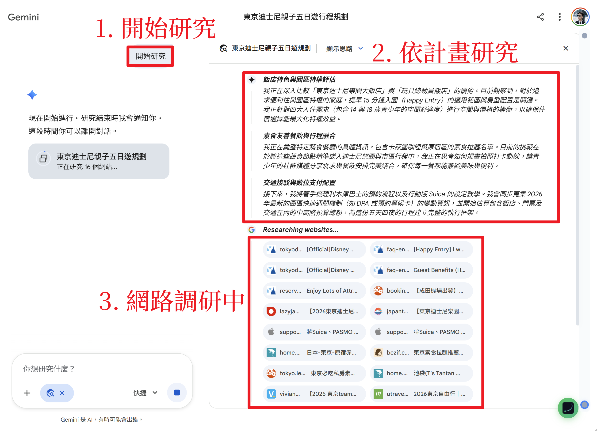
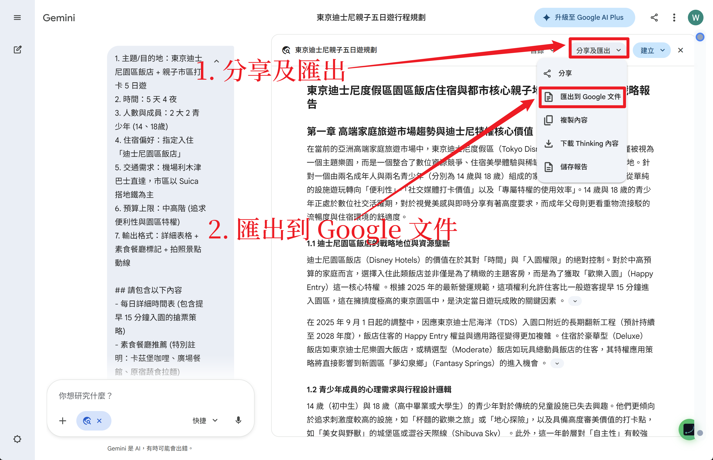
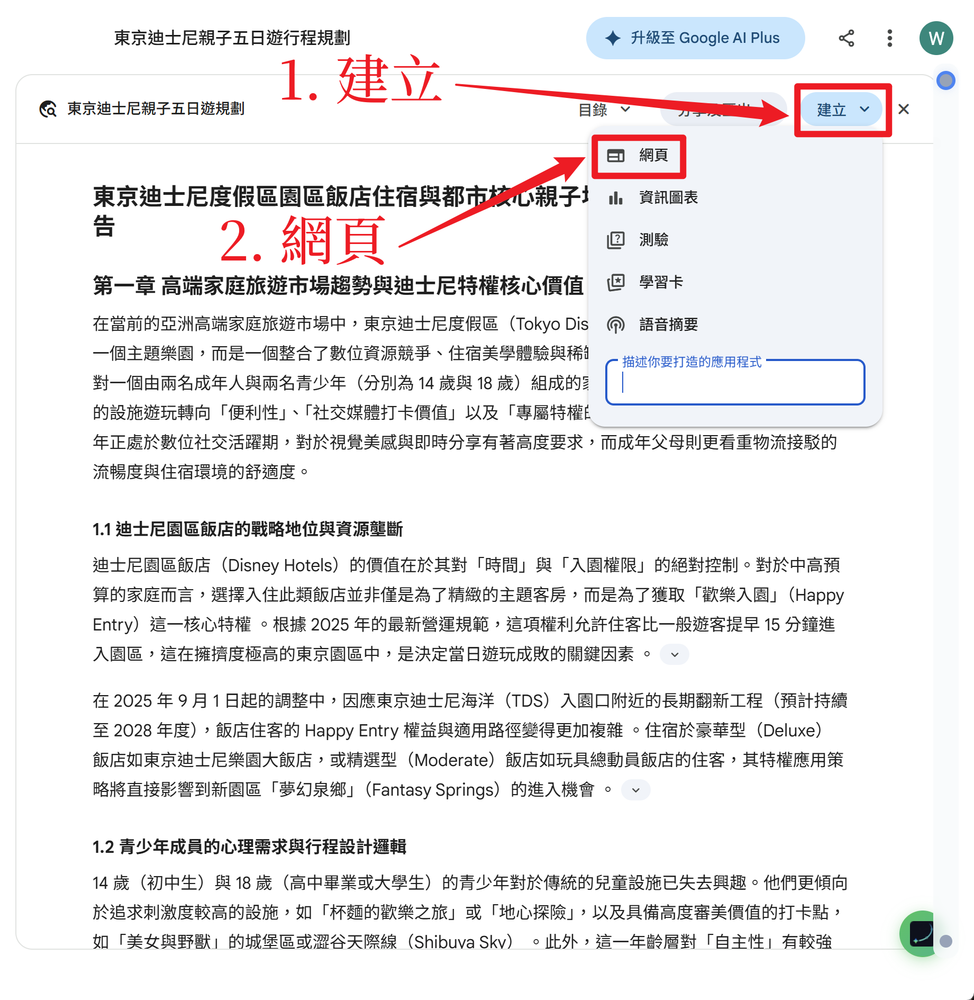

🎯 本階段目標：利用 Gemini Deep Research
的強大聯網搜尋與推理能力，產出包含細節（景點開放時間、真實交通班次、餐廳評價）的完整研究報告，並將其匯出為可編輯的 Google 文件。
1
啟動 Gemini Deep Research
準備好你在第一階段產出的「七步框架指令」了嗎？現在我們要讓 Gemini 進入最強的思考模式。
- 前往 Gemini 官方網站
- 點擊輸入框左側的「工具」按鈕
- 選擇「Deep Research」功能
- 貼上你的指令，看著它開始翻遍網路資料！

2
解析研究報告與推理過程

Deep Research 會依照你的計劃進行研究，並列出完整的推理過程。
檢查重點：
- ✅ 點擊「開始研究」啟動深度研究
- ✅ 觀察研究計畫是否符合你的需求
- ✅ 確認它正在調研多個網站來源
- ✅ 等待研究完成（約 3-5 分鐘）
3
匯出至 Google 文件
研究報告完成後，將它匯出為 Google 文件，方便後續編輯與分享。
- 在報告右上角點擊「分享及匯出」下拉選單
- 選擇「匯出到 Google 文件」
- 系統會自動建立文件並開啟 Google Docs

4
體驗網頁生成

利用 Canvas 的「建立」功能，體驗將報告一鍵轉為網頁的魔法！
- 在 Canvas 介面右上角點擊「建立」按鈕
- 選擇「網頁」
- Gemini 會自動將你的行程報告轉為精美的互動式網頁